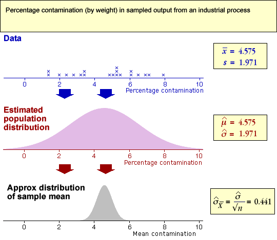

| = μ |
Need for multiple values to assess variability
In most situations, we need to make two or more measurements of a variable to get any information about its variability. For example, a sample of size two or more is needed to calculate the sample standard deviation, s.
A single value contains no information about the quantity's variability.
Achieving the impossible?
It would appear necessary to record several sample means (from different random samples) before we could obtain an estimate of the standard deviation of the sample mean.
In practice, we rarely have the luxury of repeated samples, so how can we assess the variability of a sample mean on the basis of a single sample?
Fortunately, we do not need multiple samples to do this. We can estimate the distribution of the sample mean from a single sample, based on the equations
| = μ |
| = |
We use the sample mean and standard deviation,  and s
in these equations as estimates of µ
and σ.
and s
in these equations as estimates of µ
and σ.
Examples
In the examples below, the data are used to find an estimate of the underlying population distribution — our best guess is a distribution with the same mean and standard deviation as the data.
(We have drawn this estimated population distribution as a normal distribution, but it could have a different shape (e.g. skew) with the same mean and standard deviation.)
The sample mean will be approximately normal and its standard deviation can be found from the estimated population standard deviation.

Note that the last two data sets are probably not from normal populations — they seem a bit skew. However the sample means will still be approximately normal.